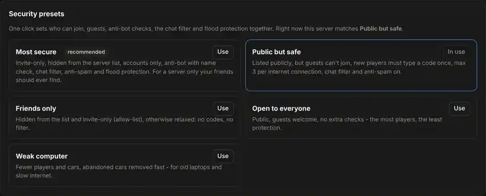

Tu propio servidor multijugador de BeamNG.drive, listo en un clic
EasyServer instala el servidor oficial de BeamMP y te da un panel para manejarlo desde el PC o el móvil. Añade mods, mira quién juega y deja fuera a los trolls, sin archivos de configuración ni línea de comandos. Es gratis y de código abierto, para Windows y Linux.

EmpezarUnos diez minutos, casi todo esperando a las descargas.
1. Consigue una AuthKey gratis
Entra en keymaster.beammp.com con Discord, haz clic en Keys, luego en +, y copia la clave. Así tu servidor aparece en la lista pública de BeamMP.
2. Instalar
Windows: Descarga BeamMP-EasyServer-Windows.zip de la última versión, descomprímelo y haz doble clic en Install-BeamMP-Server.bat.
Linux: Pega esto en una terminal:
curl -fsSL https://raw.githubusercontent.com/Csabika-dev/beammp-easyserver/stable/linux/install.sh | sudo bash
Esto instala la versión Stable, ya probada. Para las funciones más nuevas, mira Rolling.
3. Abre el panel
En el ordenador del servidor, ve a http://localhost:30815 y elige una contraseña. Desde el móvil u otro PC de casa, usa http://<ip-del-servidor>:30815.
4. Deja entrar a tus amigos
En la página Estado, haz clic en Abrir el puerto automáticamente. La mayoría de routers lo aceptan. Si el tuyo no, abre tú el puerto 30814 (TCP y UDP), y la página Estado te dice cuándo funciona.
Luego haz clic en Copiar invitación y pégala en Discord. Guías paso a paso (en inglés)
¿Prefieres verlo? Toda la instalación dura unos 2 minutos. Abrir en YouTube
Qué hacePensado para quien quiere jugar con amigos, no aprender a administrar servidores. Todas las funciones

Mods sin preocupaciones
Arrastra los zip de los mods a la página. Cada uno se revisa en busca de programas ocultos, archivos disfrazados y bombas zip con Microsoft Defender o ClamAV, y VirusTotal si quieres, antes de que los jugadores puedan descargarlo.
- Buscador de mods: instala desde el repositorio de BeamNG en un clic, y actualiza igual
- Modo ligero: los jugadores solo descargan el mapa que se está jugando, así entran antes
- Paquetes de mods: mueve o comparte todos tus mods en un solo archivo

Mira quién juega, y cuándo
Jugadores por día, las horas con más gente, un mapa de calor semanal, los mejores jugadores, los récords del servidor y los mapas en los que la gente de verdad se queda.
- Expulsa, silencia y banea desde el panel, Discord o el chat del juego
- Modo mantenimiento cierra el servidor mientras trabajas en él
- Cuentas de equipo para los amigos que ayudan, solo con los permisos que tú les des

Elige lo abierto que está
Un clic pone tu servidor en cualquier punto entre Lo más seguro (solo con invitación, anti-bots, protección contra inundaciones) y Abierto a todos. Cada cambio de configuración se guarda, así ves qué cambió y puedes deshacerlo.
- Lista de invitados, porque BeamMP no tiene contraseña para entrar
- Anti-bots: códigos de entrada, bloqueo de invitados y límites de conexiones

Contrólalo desde el móvil
El panel funciona en cualquier navegador del móvil. Hay app para Android, y en iPhone puedes añadirlo a la pantalla de inicio.
- Avisos de cierres, entradas y actualizaciones en el móvil, Discord, Telegram, Slack o por correo
- Bot de Discord con /status, /start, /restart, /whitelist y un puente de chat
- Suspensión y Wake-on-LAN, para que el PC no tenga que estar encendido todo el día

Una página de estado para los jugadores
Un enlace muestra si el servidor está en marcha, quién está conectado, qué mods descargar y el próximo evento. Sin iniciar sesión, y sin mostrar direcciones ni ajustes.
Novedades de 1.15Ya en Rolling. Pasan a Stable cuando están probadas.
Reglas de vehículos
Bloquea objetos, remolques o cualquier coche, y frena el spam de apariciones. Los coches mod tan pesados que dan tirones a todos se detectan solos.
Plugins de servidor
Instala modos de juego de la comunidad como CareerMP, freeRoamMP y BeamJoy, directamente desde la página de cada autor.
Gestionadlo en equipo
Invita a amigos con un enlace que funciona una vez y caduca a la hora, y elige qué puede hacer cada uno en cada servidor. Pueden entrar con Discord.
También incluyeTodo opcional. Activa lo que necesites.
Copiar invitación
Un mensaje listo para Discord con la dirección y el puerto.
Votación y rotación de mapas
Los jugadores escriben /vote, o el mapa cambia según un horario.
Eventos semanales
«Noche de drift del viernes» cambia el mapa y los mods y se anuncia en Discord.
/tp y /repair
Teletranspórtate con tus amigos cuando acepten, con reglas de reparación realistas o hardcore.
Limpieza de coches
Los coches abandonados se quitan, con cuenta atrás antes de la limpieza nocturna.
Herramientas de chat
Mensaje de bienvenida, anuncios programados, filtro de chat, anti-spam y /countdown.
Varios servidores
Más de un servidor en un PC, cada uno con sus propios límites de CPU, RAM y descargas.
Copias nocturnas
Restaura, o muévete a otro ordenador, con un solo archivo.
Oculta tu IP
Un relé opcional y protección contra inundaciones frente a DDoS.
Explicador de registros
Los errores del servidor en lenguaje claro, con lo que hay que hacer.
SeguridadTu servidor es un ordenador de tu red de casa, así que esto importa.
Las claves van cifradas
Tu AuthKey, tokens y contraseñas nunca se guardan en texto plano.
Usuarios separados en Linux
El servidor del juego y el panel funcionan cada uno con su propio usuario limitado.
Inicio de sesión en dos pasos
Obligatorio antes de que el panel sea accesible desde internet.
Probado en cada cambio
Pruebas automáticas intentan colarse en cada página del panel y en el plugin del juego con cada actualización.
DescargasLas dos son gratis. ¿No lo tienes claro? Elige Stable.
Stable
Probada. Es la versión marcada como «Latest» en GitHub.
- Windows: descarga BeamMP-EasyServer-Windows.zip, descomprímelo y haz doble clic en Install-BeamMP-Server.bat
- Linux:
curl -fsSL https://raw.githubusercontent.com/Csabika-dev/beammp-easyserver/stable/linux/install.sh | sudo bash
Rolling
Funciones nuevas en cuanto están hechas. Puede tener errores.
- Windows: descarga el ZIP, descomprímelo, abre la carpeta windows y haz doble clic en Install-BeamMP-Server.bat
- Linux:
curl -fsSL https://raw.githubusercontent.com/Csabika-dev/beammp-easyserver/main/linux/install.sh | sudo bash
- Mac (experimental, solo Rolling): pega esto en Terminal. Ejecuta el servidor en una pequeña máquina virtual Linux que arranca con tu Mac (cómo funciona).
curl -fsSL https://raw.githubusercontent.com/Csabika-dev/beammp-easyserver/main/mac/install.sh | bash
- ¿Algo roto? Instala Stable encima. Tus ajustes y mods se conservan.
Qué cambió en cada versión: registro de cambios, todas las versiones
PreguntasMás respuestas y la comunidad
Sí. Es gratis y de código abierto (licencia MIT), con todas las funciones y sin anuncios. BeamMP y su servidor también son gratis. Para jugar necesitas tu propia copia de BeamNG.drive.
EasyServer instala el servidor oficial de BeamMP y lo mantiene actualizado. EasyServer es un proyecto de la comunidad, no lo hace ni lo respalda el equipo de BeamMP.
Cualquier PC de 64 bits con Windows 10 u 11, o Linux (Ubuntu, Linux Mint, Debian y otros, incluida una Raspberry Pi 4 o 5 con sistema de 64 bits). Un portátil viejo basta para un grupo de amigos. La velocidad de subida importa más que el procesador.
Solo si haces clic en Abrir el puerto automáticamente, que pide al router que abra el puerto del juego. Si no, solo abre el puerto en el cortafuegos del propio ordenador, y pregunta antes.
Sí. El panel funciona en cualquier navegador del móvil, hay app para Android y puedes añadirlo a la pantalla de inicio del iPhone. Manejarlo desde fuera de casa funciona cuando activas HTTPS y el inicio de sesión en dos pasos.
Abre una incidencia en GitHub. Para problemas de seguridad, usa mejor el aviso privado.
Pruébalo en tu PC
Descárgalo, ejecútalo y sigue los pasos. Si te atascas, la página de ayuda y la comunidad te echan una mano.